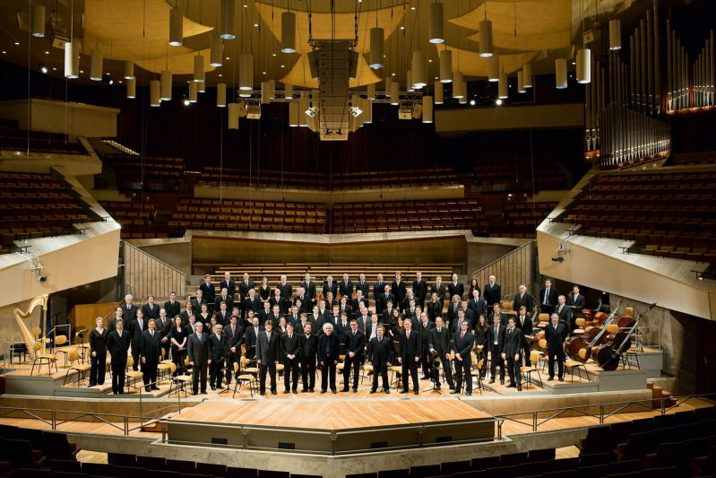
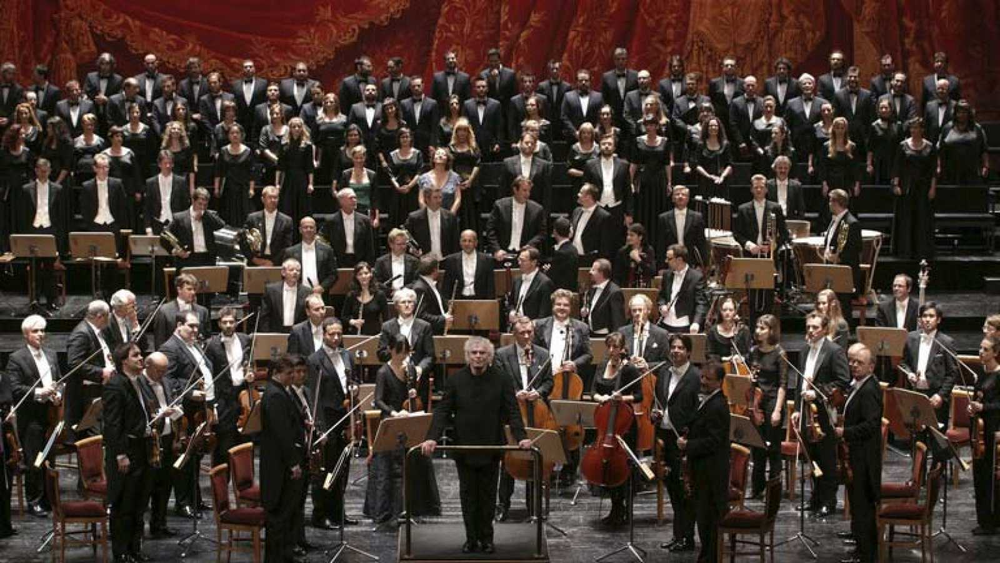
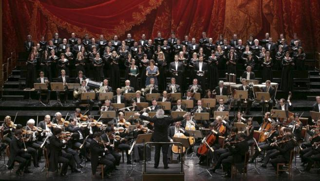

La Orquesta Filarmónica de Berlín (en alemán: Berliner Philharmoniker, abreviado como BPhil) es una de las orquestas sinfónicas más importantes del mundo. Anteriormente era conocida como Berliner Philharmonisches Orchester o BPO. Actualmente su director titular es Kirill Petrenko. La Orquesta también es base de varios conjuntos de música de cámara. Tras la destrucción, en la Segunda Guerra Mundial, de su antigua sede, la orquesta reside desde 1963 en la Berliner Philharmonie, diseñada por el arquitecto Hans Scharoun, una de las más importantes salas de conciertos del mundo. Desde 2002 es una fundación pública, de la que es titular el land de Berlín. Los fondos para la organización son subvencionados por el gobierno de la ciudad de Berlín, con el patrocinio del Deutsche Bank.
Click en el botón para leer la biografía